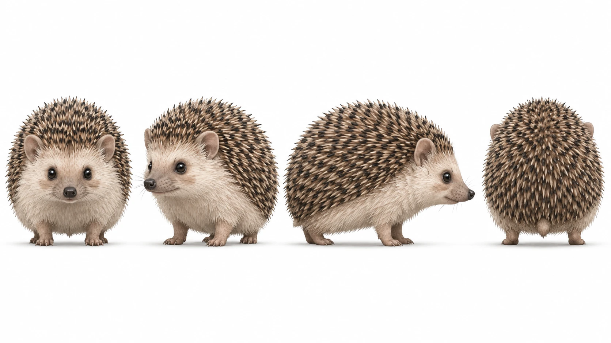
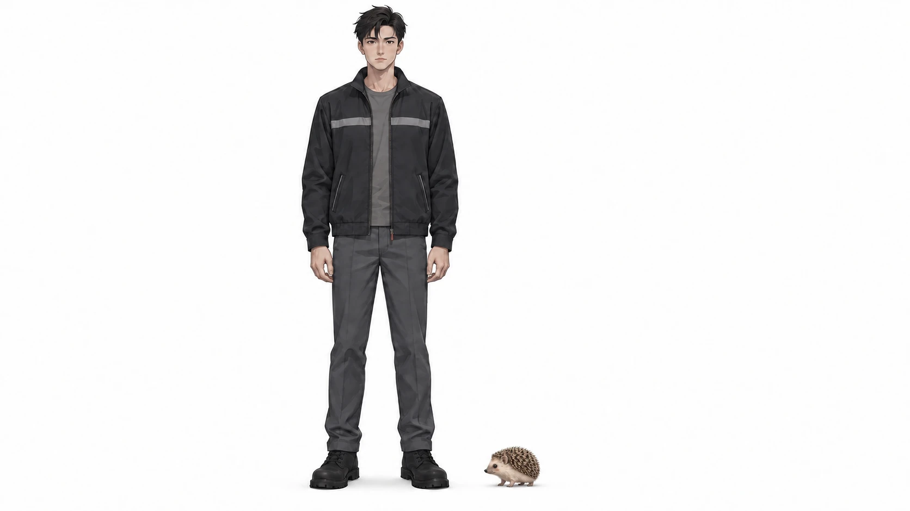

更新日期：2026-11-01
狀態：已確認方案；雙語文字、15 張圖像、字幕與本地圖像總覽已完成並核對。實際影片與音訊尚未生成。
風格：S08｜冷灰都市暗調電影感。英文描述：Cool-Gray Urban Cinematic Anime。
全片 60 秒＝片頭 5 秒＋正片 10 鏡各 5 秒＋片尾 5 秒。
圖像總覽｜分鏡圖像提示詞｜12 段影片提示詞｜資產清單｜核對報告
正式分鏡補充：懸念來自腳步聲，揭曉後轉為理解與照顧，不走恐怖或追逐路線。青年以紙板提供路徑，再退開讓刺蝟自行通過，不徒手搬運動物。
| 項目 | 中文 | English |
|---|---|---|
| 大標題 | 暗處的小腳步 | Footsteps in the Dark |
| 副標題 | 一點善意，夜也溫柔。 | Kindness softens the dark. |
中英文已逐句核對語法與情緒，採自然詩意對應。中文字幕每鏡 6 字，英文每鏡 2–4 個單字。字幕以後製軌交付，分鏡原圖不寫入文字。
09、10鏡位已移到外側平坦步道，矮階與斜坡在畫外；不得在動物前後新增第二道台階。
紙板是同一片厚硬紙板：安放後下端貼住室內地面，上端搭進平台。中間有正常坡下空間，兩端不能懸空；不生成折階、扶手或第二片紙板。
| 段落 | 全片時間 | 時長 |
|---|---|---|
| 片頭 | 00:00–00:05 | 5 秒 |
| 十鏡正片 | 00:05–00:55 | 50 秒 |
| 片尾 | 00:55–01:00 | 5 秒 |
| 鏡號／類型 | 小標題／English | 全片時間 | 中文字幕 | English Caption | 長度 |
|---|---|---|---|---|---|
| 01 遠景 / Wide shot | 夜巡微光 / The Night Patrol | 5–10 秒 | 夜色輕輕跟隨 | Night follows. | 5 秒 |
| 02 低機位特寫 / Low close-up | 腳步忽停 / A Sudden Pause | 10–15 秒 | 誰在身後停步 | Who is there? | 5 秒 |
| 03 中近景 / Medium close-up | 回身尋聲 / Turning to Listen | 15–20 秒 | 回頭不見人影 | No one in sight. | 5 秒 |
| 04 貼地近景 / Ground-level close-up | 矮階小客 / The Little Visitor | 20–25 秒 | 原來是你在等 | There you are. | 5 秒 |
| 05 中景 / Medium shot | 紙板取下 / A Simple Idea | 25–30 秒 | 把驚慌輕放下 | Fear rests. | 5 秒 |
| 06 斜側近景 / Oblique close-up | 搭起緩坡 / A Gentler Way | 30–35 秒 | 替小腳鋪條路 | A gentler way. | 5 秒 |
| 07 全景 / Full shot | 退開一步 / Giving Space | 35–40 秒 | 退一步也溫柔 | Give kindness space. | 5 秒 |
| 08 低機位側景 / Low side shot | 小步上坡 / Every Step Counts | 40–45 秒 | 每小步都算數 | Each step counts. | 5 秒 |
| 09 低機位近景 / Low close-up | 葉下歸途 / Home Beneath Leaves | 45–50 秒 | 葉下就是歸處 | Home beneath leaves. | 5 秒 |
| 10 中遠景 / Medium-wide shot | 清晨目送 / A Quiet Goodbye | 50–55 秒 | 天色因你微明 | You brighten dawn. | 5 秒 |
類型：遠景 / Wide shot；全片 5–10 秒，共 5 秒。
中文
青年從出口方向往通道內走，右手手電筒斜照前方地面。右後方暗紅指示燈標示矮階位置，左牆倚著一片無字硬紙板；刺蝟尚未入鏡。
English
Shuo walks inward from the exit, his right-hand torch aimed at the floor ahead. The muted-red indicator locates the rear-right threshold; a blank cardboard sheet leans at the left wall. Chestnut remains off-screen.
字幕：夜色輕輕跟隨 / Night follows.
聲音建議：青年一個腳步，後方接兩聲極輕碎步。
中文
9:16直式單張分鏡，無文字、字幕、標誌或浮水印。S08｜冷灰都市暗調電影感。冷灰低彩度、深黑大形、少量暗紅焦點、柔化背景、局部冷色輪廓光，細顆粒與可見筆觸、柔硬邊緣並用，人物保持動漫造型與克制表情；不作攝影寫實、3D或高彩平塗。同一段半地下短通道：冷灰混凝土牆、深灰啞光乾地面、少量頂燈；通道向街面緩升，最末端只一道約12公分高的矮門檻，絕非多層階梯。由室內看，出口及矮階固定在畫面右後方；右牆矮階上方一枚無字暗紅矩形指示燈，外側同高平坦步道與右邊樹籬相接。前段夜色，末段微弱灰藍晨光，無地面鏡像、水窪或可讀招牌。唯一手電筒為14公分長黑色短圓筒、單一圓燈頭。01–04青年右手持、光束朝地面；05–09已平放室內左側地面照向矮階旁，非直射動物眼睛；10與片尾已拾回並關閉。唯一70×35公分無字棕色硬紙板，起初倚左牆，05取下，06架成緩坡：下端貼室內地面，上端跨過門檻並在平台重疊約10公分；平整厚紙板不懸空、不折成樓梯。以角色設定與共同比例固定外觀，只加入本鏡指定角色；無多餘肢體、六指、動態弧線、殘影、地面倒影、懸空紙板或穿插接觸點。朔，22歲青年夜班站務學徒，約174公分、纖細普通七頭身，暖灰白膚色、深棕眼，炭黑短碎髮、額前一束小彎瀏海、兩側修短，無鬍鬚。及臀深炭灰立領拉鍊工作外套、兩側口袋，胸背與雙上臂固定一條窄灰反光帶、小暗紅拉鍊頭；暖灰圓領內衫、石板灰直褲、黑色踝工作靴。無帽、手套、胸牌、手錶、耳飾、戒指或背包。青年從出口方向往通道內走，右手手電筒斜照前方地面。右後方暗紅指示燈標示矮階位置，左牆倚著一片無字硬紙板；刺蝟尚未入鏡。
English
Use case: illustration-story. ONE portrait9:16 storyboard, ideally864x1536, NO lettering/captions/logos/watermark. S08 cool-gray low-saturation urban cinematic anime painting: deep near-black shapes, tiny muted-crimson accents, soft background depth, local cool rim light, fine grain and restrained visible brushwork, soft/hard painted edges, anime faces with subtle expression. Not photography,3D or saturated flat-vector art. One short semi-underground passage: cool-gray concrete walls, dark matte DRY floor, sparse overhead lights; corridor gently rises toward street, ending in ONE12cm LOW THRESHOLD, never a staircase. From interior, exit/step stay rear-RIGHT; ONE blank muted-red rectangular indicator on RIGHT wall above it. Raised exterior landing is flat and connects to hedge at RIGHT. Night initially, pale gray-blue dawn later; no mirrored floor, puddles or readable signs. ONE14cm black cylindrical flashlight with single round head. Held in RIGHT hand01–04, aimed at FLOOR; set horizontally on interior LEFT floor05–09 toward space beside threshold, not animal eyes; retrieved and switched OFF in10/ending. ONE blank brown stiff70x35cm cardboard sheet initially against LEFT wall, taken in05, set as ramp in06: lower end flush to inside floor, upper end overlaps raised landing about10cm. Flat supported sheet, not floating or folded stairs. Reference sheets lock identity/scale, not scene layout. Only explicitly visible actors. No extra limbs/digits, motion marks, trails, reflected bodies, floating cardboard or intersections. Shuo,22-year-old male night-station apprentice,174cm, slim average seven-head build, warm pale-gray skin, dark-brown eyes, charcoal-black short textured hair with one small forward-curved forelock and tapered sides, no beard. Hip-length charcoal stand-collar zip work jacket, two side pockets, fixed thin gray reflective band across chest/back and upper arms, tiny burgundy zipper pull; warm-gray crew-neck shirt, slate straight trousers, matte black ankle work boots. No hat, gloves, name badge, watch, earrings, rings or bag. Wide inward-facing view of cool concrete passage. Man center-left walks TOWARD camera from rear-right exit, three-quarter front, right hand holding black torch pointed DOWN toward foreground floor; left arm relaxed. ONE small dim red blank indicator rear-right above single low threshold to outside, no staircase or signs. ONE plain brown cardboard sheet leaning against LEFT wall near exit, no crate or extra boards. Hedgehog NOT visible. Full boots on dry matte floor, no reflected legs. Quiet mild suspense, not horror.
中文
以shot_01.png為起始幀，9:16。5秒，鏡頭緩退約3%；青年只走一小步，右手光斑隨手腕在地面前移，左手自然擺動，刺蝟不入鏡。 固定角色、反光帶、刺毛分界與單一矮階，維持同一通道和手電筒光向。無文字、速度線、殘影、新角色或顆粒閃爍。
English
Use shot_01.png as start frame,9:16. 5 seconds, slow3% retreat. He takes ONE short step; torch pool moves along floor with right wrist, left arm swings naturally. No hedgehog enters. Lock identity, jacket bands, quill boundary, single threshold, passage and torch direction. No lettering, motion marks, trails, new actors or flickering grain.
類型：低機位特寫 / Low close-up；全片 10–15 秒，共 5 秒。
中文
近拍青年靴子停在乾燥地面，兩腳落點分明；手電筒光斑停在畫面邊緣。聽得見小腳步，但仍未看見來源。
English
Close on Shuo's boots stopping on dry floor, each foot clearly grounded. The torch pool rests near the frame edge. Tiny footsteps are heard, their source still unseen.
字幕：誰在身後停步 / Who is there?
聲音建議：一聲靴底停步後，碎步聲戛然而止。
中文
9:16直式單張分鏡，無文字、字幕、標誌或浮水印。S08｜冷灰都市暗調電影感。冷灰低彩度、深黑大形、少量暗紅焦點、柔化背景、局部冷色輪廓光，細顆粒與可見筆觸、柔硬邊緣並用，人物保持動漫造型與克制表情；不作攝影寫實、3D或高彩平塗。同一段半地下短通道：冷灰混凝土牆、深灰啞光乾地面、少量頂燈；通道向街面緩升，最末端只一道約12公分高的矮門檻，絕非多層階梯。由室內看，出口及矮階固定在畫面右後方；右牆矮階上方一枚無字暗紅矩形指示燈，外側同高平坦步道與右邊樹籬相接。前段夜色，末段微弱灰藍晨光，無地面鏡像、水窪或可讀招牌。唯一手電筒為14公分長黑色短圓筒、單一圓燈頭。01–04青年右手持、光束朝地面；05–09已平放室內左側地面照向矮階旁，非直射動物眼睛；10與片尾已拾回並關閉。唯一70×35公分無字棕色硬紙板，起初倚左牆，05取下，06架成緩坡：下端貼室內地面，上端跨過門檻並在平台重疊約10公分；平整厚紙板不懸空、不折成樓梯。以角色設定與共同比例固定外觀，只加入本鏡指定角色；無多餘肢體、六指、動態弧線、殘影、地面倒影、懸空紙板或穿插接觸點。朔，22歲青年夜班站務學徒，約174公分、纖細普通七頭身，暖灰白膚色、深棕眼，炭黑短碎髮、額前一束小彎瀏海、兩側修短，無鬍鬚。及臀深炭灰立領拉鍊工作外套、兩側口袋，胸背與雙上臂固定一條窄灰反光帶、小暗紅拉鍊頭；暖灰圓領內衫、石板灰直褲、黑色踝工作靴。無帽、手套、胸牌、手錶、耳飾、戒指或背包。近拍青年靴子停在乾燥地面，兩腳落點分明；手電筒光斑停在畫面邊緣。聽得見小腳步，但仍未看見來源。
English
Use case: illustration-story. ONE portrait9:16 storyboard, ideally864x1536, NO lettering/captions/logos/watermark. S08 cool-gray low-saturation urban cinematic anime painting: deep near-black shapes, tiny muted-crimson accents, soft background depth, local cool rim light, fine grain and restrained visible brushwork, soft/hard painted edges, anime faces with subtle expression. Not photography,3D or saturated flat-vector art. One short semi-underground passage: cool-gray concrete walls, dark matte DRY floor, sparse overhead lights; corridor gently rises toward street, ending in ONE12cm LOW THRESHOLD, never a staircase. From interior, exit/step stay rear-RIGHT; ONE blank muted-red rectangular indicator on RIGHT wall above it. Raised exterior landing is flat and connects to hedge at RIGHT. Night initially, pale gray-blue dawn later; no mirrored floor, puddles or readable signs. ONE14cm black cylindrical flashlight with single round head. Held in RIGHT hand01–04, aimed at FLOOR; set horizontally on interior LEFT floor05–09 toward space beside threshold, not animal eyes; retrieved and switched OFF in10/ending. ONE blank brown stiff70x35cm cardboard sheet initially against LEFT wall, taken in05, set as ramp in06: lower end flush to inside floor, upper end overlaps raised landing about10cm. Flat supported sheet, not floating or folded stairs. Reference sheets lock identity/scale, not scene layout. Only explicitly visible actors. No extra limbs/digits, motion marks, trails, reflected bodies, floating cardboard or intersections. Shuo,22-year-old male night-station apprentice,174cm, slim average seven-head build, warm pale-gray skin, dark-brown eyes, charcoal-black short textured hair with one small forward-curved forelock and tapered sides, no beard. Hip-length charcoal stand-collar zip work jacket, two side pockets, fixed thin gray reflective band across chest/back and upper arms, tiny burgundy zipper pull; warm-gray crew-neck shirt, slate straight trousers, matte black ankle work boots. No hat, gloves, name badge, watch, earrings, rings or bag. Low close-up of only man's TWO matte-black work boots and slate trouser hems, both planted with separate sensible contact shadows on DRY matte concrete. One heel just settling from walk. Small soft torch pool at far lower edge, faint muted-red wall glow in distant blur, no visible hand or head. NO hedgehog yet, no extra legs in upper frame, puddle, mirrored boots or graphic footprints. Keep simple cool-gray cinematic painted frame.
中文
以shot_02.png為起始幀，9:16。5秒，固定低機位；抬起的腳跟落穩一次，地面光斑停下；碎步聲也停住，畫面不生成腳印或另一雙腳。 固定角色、反光帶、刺毛分界與單一矮階，維持同一通道和手電筒光向。無文字、速度線、殘影、新角色或顆粒閃爍。
English
Use shot_02.png as start frame,9:16. 5 seconds, locked low camera. One heel settles, torch pool stops; tiny footsteps also cease. No generated footprints or second pair of feet. Lock identity, jacket bands, quill boundary, single threshold, passage and torch direction. No lettering, motion marks, trails, new actors or flickering grain.
類型：中近景 / Medium close-up；全片 15–20 秒，共 5 秒。
中文
青年微轉頭看向右後方出口，表情是疑惑而非驚恐；右手仍低持手電筒，光線沿地面轉向矮階方向。
English
Shuo turns toward the rear-right exit, curious rather than frightened. His right hand keeps the torch low, its light sweeping the floor toward the threshold.
字幕：回頭不見人影 / No one in sight.
聲音建議：衣料輕響、短暫安靜。
中文
9:16直式單張分鏡，無文字、字幕、標誌或浮水印。S08｜冷灰都市暗調電影感。冷灰低彩度、深黑大形、少量暗紅焦點、柔化背景、局部冷色輪廓光，細顆粒與可見筆觸、柔硬邊緣並用，人物保持動漫造型與克制表情；不作攝影寫實、3D或高彩平塗。同一段半地下短通道：冷灰混凝土牆、深灰啞光乾地面、少量頂燈；通道向街面緩升，最末端只一道約12公分高的矮門檻，絕非多層階梯。由室內看，出口及矮階固定在畫面右後方；右牆矮階上方一枚無字暗紅矩形指示燈，外側同高平坦步道與右邊樹籬相接。前段夜色，末段微弱灰藍晨光，無地面鏡像、水窪或可讀招牌。唯一手電筒為14公分長黑色短圓筒、單一圓燈頭。01–04青年右手持、光束朝地面；05–09已平放室內左側地面照向矮階旁，非直射動物眼睛；10與片尾已拾回並關閉。唯一70×35公分無字棕色硬紙板，起初倚左牆，05取下，06架成緩坡：下端貼室內地面，上端跨過門檻並在平台重疊約10公分；平整厚紙板不懸空、不折成樓梯。以角色設定與共同比例固定外觀，只加入本鏡指定角色；無多餘肢體、六指、動態弧線、殘影、地面倒影、懸空紙板或穿插接觸點。朔，22歲青年夜班站務學徒，約174公分、纖細普通七頭身，暖灰白膚色、深棕眼，炭黑短碎髮、額前一束小彎瀏海、兩側修短，無鬍鬚。及臀深炭灰立領拉鍊工作外套、兩側口袋，胸背與雙上臂固定一條窄灰反光帶、小暗紅拉鍊頭；暖灰圓領內衫、石板灰直褲、黑色踝工作靴。無帽、手套、胸牌、手錶、耳飾、戒指或背包。青年微轉頭看向右後方出口，表情是疑惑而非驚恐；右手仍低持手電筒，光線沿地面轉向矮階方向。
English
Use case: illustration-story. ONE portrait9:16 storyboard, ideally864x1536, NO lettering/captions/logos/watermark. S08 cool-gray low-saturation urban cinematic anime painting: deep near-black shapes, tiny muted-crimson accents, soft background depth, local cool rim light, fine grain and restrained visible brushwork, soft/hard painted edges, anime faces with subtle expression. Not photography,3D or saturated flat-vector art. One short semi-underground passage: cool-gray concrete walls, dark matte DRY floor, sparse overhead lights; corridor gently rises toward street, ending in ONE12cm LOW THRESHOLD, never a staircase. From interior, exit/step stay rear-RIGHT; ONE blank muted-red rectangular indicator on RIGHT wall above it. Raised exterior landing is flat and connects to hedge at RIGHT. Night initially, pale gray-blue dawn later; no mirrored floor, puddles or readable signs. ONE14cm black cylindrical flashlight with single round head. Held in RIGHT hand01–04, aimed at FLOOR; set horizontally on interior LEFT floor05–09 toward space beside threshold, not animal eyes; retrieved and switched OFF in10/ending. ONE blank brown stiff70x35cm cardboard sheet initially against LEFT wall, taken in05, set as ramp in06: lower end flush to inside floor, upper end overlaps raised landing about10cm. Flat supported sheet, not floating or folded stairs. Reference sheets lock identity/scale, not scene layout. Only explicitly visible actors. No extra limbs/digits, motion marks, trails, reflected bodies, floating cardboard or intersections. Shuo,22-year-old male night-station apprentice,174cm, slim average seven-head build, warm pale-gray skin, dark-brown eyes, charcoal-black short textured hair with one small forward-curved forelock and tapered sides, no beard. Hip-length charcoal stand-collar zip work jacket, two side pockets, fixed thin gray reflective band across chest/back and upper arms, tiny burgundy zipper pull; warm-gray crew-neck shirt, slate straight trousers, matte black ankle work boots. No hat, gloves, name badge, watch, earrings, rings or bag. Medium waist-up three-quarter shot of Shuo turning his head toward IMAGE RIGHT/rear exit. Dark-brown eyes alert/curious, brows slightly lifted, not terrified. Right hand holds ONE black torch LOW near hip, aimed downward to right floor below crop, left arm relaxed low. Charcoal jacket reflective bands fixed across chest/arms, no badges. Background same cool corridor with dim red indicator toward rear-right. No hedgehog, giant shadow, silhouette person or monster. Natural two arms, no text.
中文
以shot_03.png為起始幀，9:16。5秒，固定鏡頭；青年轉頭約15度後停下，右腕將地面光斑慢慢轉向出口，不把光打到鏡頭或突然強閃。 固定角色、反光帶、刺毛分界與單一矮階，維持同一通道和手電筒光向。無文字、速度線、殘影、新角色或顆粒閃爍。
English
Use shot_03.png as start frame,9:16. 5 seconds, locked. Head turns about15degrees and pauses; right wrist slowly redirects floor light toward exit. No lens flare burst or beam aimed at camera. Lock identity, jacket bands, quill boundary, single threshold, passage and torch direction. No lettering, motion marks, trails, new actors or flickering grain.
類型：貼地近景 / Ground-level close-up；全片 20–25 秒，共 5 秒。
中文
地面高度揭示刺蝟停在矮階前，前足靠近立面，後足有支撐，鼻子略抬；手電筒的柔和光斑落在旁邊，沒有照射眼睛。
English
At floor level, Chestnut pauses before the low threshold, rear paws supported and nose slightly raised. The torch pool lands beside it, away from its eyes.
字幕：原來是你在等 / There you are.
聲音建議：一聲極輕足爪聲，音樂由疑惑轉柔。
中文
9:16直式單張分鏡，無文字、字幕、標誌或浮水印。S08｜冷灰都市暗調電影感。冷灰低彩度、深黑大形、少量暗紅焦點、柔化背景、局部冷色輪廓光，細顆粒與可見筆觸、柔硬邊緣並用，人物保持動漫造型與克制表情；不作攝影寫實、3D或高彩平塗。同一段半地下短通道：冷灰混凝土牆、深灰啞光乾地面、少量頂燈；通道向街面緩升，最末端只一道約12公分高的矮門檻，絕非多層階梯。由室內看，出口及矮階固定在畫面右後方；右牆矮階上方一枚無字暗紅矩形指示燈，外側同高平坦步道與右邊樹籬相接。前段夜色，末段微弱灰藍晨光，無地面鏡像、水窪或可讀招牌。唯一手電筒為14公分長黑色短圓筒、單一圓燈頭。01–04青年右手持、光束朝地面；05–09已平放室內左側地面照向矮階旁，非直射動物眼睛；10與片尾已拾回並關閉。唯一70×35公分無字棕色硬紙板，起初倚左牆，05取下，06架成緩坡：下端貼室內地面，上端跨過門檻並在平台重疊約10公分；平整厚紙板不懸空、不折成樓梯。以角色設定與共同比例固定外觀，只加入本鏡指定角色；無多餘肢體、六指、動態弧線、殘影、地面倒影、懸空紙板或穿插接觸點。栗栗，小型刺蝟，鼻尖至臀部約16公分，肩高約8公分，棕灰濃密短刺與深色刺尖，額頭至身側弧形刺毛分界固定；淺米色臉腹、黑亮小眼、米色小圓耳、深棕小鼻、四隻短足，約一公分鈍短尾多半隱藏。不是豪豬，無長刺、長尾或人類表情。地面高度揭示刺蝟停在矮階前，前足靠近立面，後足有支撐，鼻子略抬；手電筒的柔和光斑落在旁邊，沒有照射眼睛。
English
Use case: illustration-story. ONE portrait9:16 storyboard, ideally864x1536, NO lettering/captions/logos/watermark. S08 cool-gray low-saturation urban cinematic anime painting: deep near-black shapes, tiny muted-crimson accents, soft background depth, local cool rim light, fine grain and restrained visible brushwork, soft/hard painted edges, anime faces with subtle expression. Not photography,3D or saturated flat-vector art. One short semi-underground passage: cool-gray concrete walls, dark matte DRY floor, sparse overhead lights; corridor gently rises toward street, ending in ONE12cm LOW THRESHOLD, never a staircase. From interior, exit/step stay rear-RIGHT; ONE blank muted-red rectangular indicator on RIGHT wall above it. Raised exterior landing is flat and connects to hedge at RIGHT. Night initially, pale gray-blue dawn later; no mirrored floor, puddles or readable signs. ONE14cm black cylindrical flashlight with single round head. Held in RIGHT hand01–04, aimed at FLOOR; set horizontally on interior LEFT floor05–09 toward space beside threshold, not animal eyes; retrieved and switched OFF in10/ending. ONE blank brown stiff70x35cm cardboard sheet initially against LEFT wall, taken in05, set as ramp in06: lower end flush to inside floor, upper end overlaps raised landing about10cm. Flat supported sheet, not floating or folded stairs. Reference sheets lock identity/scale, not scene layout. Only explicitly visible actors. No extra limbs/digits, motion marks, trails, reflected bodies, floating cardboard or intersections. Chestnut, small hedgehog, nose-to-rump about16cm, shoulder8cm. Dense short brown-gray quills with dark tips and fixed curved forehead/flank boundary; pale warm-beige face/belly, black bead eyes, small rounded beige ears, dark-brown nose, FOUR short paws, tiny1cm blunt tail mostly hidden. Natural hedgehog, no porcupine spikes, long tail or human expression. Ground-level close shot of ONE small hedgehog at foot of a SINGLE12cm smooth concrete threshold at screen-right, faces right/up. TWO hindfeet planted on lower floor, forefeet close to riser (one may lightly touch), nose slightly up, normal short-quill body, not upright humanoid. Torch light POOL from off-frame LEFT falls on floor BESIDE animal, not blinding eyes. Cool ambient with muted red indicator above far-right outside crop or small soft glow. Flat exterior landing beyond single step; NO flight of stairs, cardboard ramp not installed yet. No human hands, extra paws or porcupine spikes.
中文
以shot_04.png為起始幀，9:16。5秒，固定鏡頭；刺蝟用一隻前足輕試矮階後放回地面，頭微抬，不攀上、不翻滾、不變成刺球。 固定角色、反光帶、刺毛分界與單一矮階，維持同一通道和手電筒光向。無文字、速度線、殘影、新角色或顆粒閃爍。
English
Use shot_04.png as start frame,9:16. 5 seconds, locked. Hedgehog tests riser once with ONE forepaw then places it back; small head lift. No successful climb yet, rolling or ball transformation. Lock identity, jacket bands, quill boundary, single threshold, passage and torch direction. No lettering, motion marks, trails, new actors or flickering grain.
類型：中景 / Medium shot；全片 25–30 秒，共 5 秒。
中文
青年在左牆旁單膝蹲低，兩手握住原先倚牆紙板的兩側。手電筒已平放左側地面，穩定照著矮階旁；刺蝟在遠處等待。
English
Shuo kneels by the left wall, both hands on the cardboard's side edges. The torch already lies on the left floor, steadily lighting beside the threshold. Chestnut waits farther away.
字幕：把驚慌輕放下 / Fear rests.
聲音建議：硬紙板輕擦牆面聲。
中文
9:16直式單張分鏡，無文字、字幕、標誌或浮水印。S08｜冷灰都市暗調電影感。冷灰低彩度、深黑大形、少量暗紅焦點、柔化背景、局部冷色輪廓光，細顆粒與可見筆觸、柔硬邊緣並用，人物保持動漫造型與克制表情；不作攝影寫實、3D或高彩平塗。同一段半地下短通道：冷灰混凝土牆、深灰啞光乾地面、少量頂燈；通道向街面緩升，最末端只一道約12公分高的矮門檻，絕非多層階梯。由室內看，出口及矮階固定在畫面右後方；右牆矮階上方一枚無字暗紅矩形指示燈，外側同高平坦步道與右邊樹籬相接。前段夜色，末段微弱灰藍晨光，無地面鏡像、水窪或可讀招牌。唯一手電筒為14公分長黑色短圓筒、單一圓燈頭。01–04青年右手持、光束朝地面；05–09已平放室內左側地面照向矮階旁，非直射動物眼睛；10與片尾已拾回並關閉。唯一70×35公分無字棕色硬紙板，起初倚左牆，05取下，06架成緩坡：下端貼室內地面，上端跨過門檻並在平台重疊約10公分；平整厚紙板不懸空、不折成樓梯。以角色設定與共同比例固定外觀，只加入本鏡指定角色；無多餘肢體、六指、動態弧線、殘影、地面倒影、懸空紙板或穿插接觸點。朔，22歲青年夜班站務學徒，約174公分、纖細普通七頭身，暖灰白膚色、深棕眼，炭黑短碎髮、額前一束小彎瀏海、兩側修短，無鬍鬚。及臀深炭灰立領拉鍊工作外套、兩側口袋，胸背與雙上臂固定一條窄灰反光帶、小暗紅拉鍊頭；暖灰圓領內衫、石板灰直褲、黑色踝工作靴。無帽、手套、胸牌、手錶、耳飾、戒指或背包。青年在左牆旁單膝蹲低，兩手握住原先倚牆紙板的兩側。手電筒已平放左側地面，穩定照著矮階旁；刺蝟在遠處等待。
English
Use case: illustration-story. ONE portrait9:16 storyboard, ideally864x1536, NO lettering/captions/logos/watermark. S08 cool-gray low-saturation urban cinematic anime painting: deep near-black shapes, tiny muted-crimson accents, soft background depth, local cool rim light, fine grain and restrained visible brushwork, soft/hard painted edges, anime faces with subtle expression. Not photography,3D or saturated flat-vector art. One short semi-underground passage: cool-gray concrete walls, dark matte DRY floor, sparse overhead lights; corridor gently rises toward street, ending in ONE12cm LOW THRESHOLD, never a staircase. From interior, exit/step stay rear-RIGHT; ONE blank muted-red rectangular indicator on RIGHT wall above it. Raised exterior landing is flat and connects to hedge at RIGHT. Night initially, pale gray-blue dawn later; no mirrored floor, puddles or readable signs. ONE14cm black cylindrical flashlight with single round head. Held in RIGHT hand01–04, aimed at FLOOR; set horizontally on interior LEFT floor05–09 toward space beside threshold, not animal eyes; retrieved and switched OFF in10/ending. ONE blank brown stiff70x35cm cardboard sheet initially against LEFT wall, taken in05, set as ramp in06: lower end flush to inside floor, upper end overlaps raised landing about10cm. Flat supported sheet, not floating or folded stairs. Reference sheets lock identity/scale, not scene layout. Only explicitly visible actors. No extra limbs/digits, motion marks, trails, reflected bodies, floating cardboard or intersections. Shuo,22-year-old male night-station apprentice,174cm, slim average seven-head build, warm pale-gray skin, dark-brown eyes, charcoal-black short textured hair with one small forward-curved forelock and tapered sides, no beard. Hip-length charcoal stand-collar zip work jacket, two side pockets, fixed thin gray reflective band across chest/back and upper arms, tiny burgundy zipper pull; warm-gray crew-neck shirt, slate straight trousers, matte black ankle work boots. No hat, gloves, name badge, watch, earrings, rings or bag. Medium side shot of SAME young man kneeling on ONE knee at LEFT wall, TWO empty bare hands now grip opposite side edges of ONE blank brown stiff rectangular70x35cm cardboard sheet, lower edge near floor, about to lift from leaning wall. Right hand/left hand clearly attach to two forearms, no additional hands. Flashlight ALREADY resting horizontally on LEFT floor, single round head aimed toward floor beside threshold at rear-right, stable not floating. Small hedgehog may be tiny distant near threshold, or outside crop. Jacket bands and boots consistent, knee/floor contact clear. No tool box, second board or lettering.
中文
以shot_05.png為起始幀，9:16。5秒，固定鏡頭；青年只把紙板抬離牆面少許，雙手保持握側邊，手電筒不移動，刺蝟不靠近。 固定角色、反光帶、刺毛分界與單一矮階，維持同一通道和手電筒光向。無文字、速度線、殘影、新角色或顆粒閃爍。
English
Use shot_05.png as start frame,9:16. 5 seconds, locked. He lifts cardboard slightly away from wall, hands stay on its side edges. Torch remains fixed, hedgehog stays distant. Lock identity, jacket bands, quill boundary, single threshold, passage and torch direction. No lettering, motion marks, trails, new actors or flickering grain.
類型：斜側近景 / Oblique close-up；全片 30–35 秒，共 5 秒。
中文
斜側看同一片紙板架在矮門檻上，下端貼住通道地面，上端已搭進較高平台。青年雙手只在兩側邊緣輕扶，刺蝟在畫外。
English
Oblique view of the same cardboard spanning the threshold, bottom flush to corridor floor and top overlapping the raised landing. Shuo lightly steadies its two side edges; Chestnut is off-screen.
字幕：替小腳鋪條路 / A gentler way.
聲音建議：紙板貼住混凝土的輕響。
中文
9:16直式單張分鏡，無文字、字幕、標誌或浮水印。S08｜冷灰都市暗調電影感。冷灰低彩度、深黑大形、少量暗紅焦點、柔化背景、局部冷色輪廓光，細顆粒與可見筆觸、柔硬邊緣並用，人物保持動漫造型與克制表情；不作攝影寫實、3D或高彩平塗。同一段半地下短通道：冷灰混凝土牆、深灰啞光乾地面、少量頂燈；通道向街面緩升，最末端只一道約12公分高的矮門檻，絕非多層階梯。由室內看，出口及矮階固定在畫面右後方；右牆矮階上方一枚無字暗紅矩形指示燈，外側同高平坦步道與右邊樹籬相接。前段夜色，末段微弱灰藍晨光，無地面鏡像、水窪或可讀招牌。唯一手電筒為14公分長黑色短圓筒、單一圓燈頭。01–04青年右手持、光束朝地面；05–09已平放室內左側地面照向矮階旁，非直射動物眼睛；10與片尾已拾回並關閉。唯一70×35公分無字棕色硬紙板，起初倚左牆，05取下，06架成緩坡：下端貼室內地面，上端跨過門檻並在平台重疊約10公分；平整厚紙板不懸空、不折成樓梯。以角色設定與共同比例固定外觀，只加入本鏡指定角色；無多餘肢體、六指、動態弧線、殘影、地面倒影、懸空紙板或穿插接觸點。朔，22歲青年夜班站務學徒，約174公分、纖細普通七頭身，暖灰白膚色、深棕眼，炭黑短碎髮、額前一束小彎瀏海、兩側修短，無鬍鬚。及臀深炭灰立領拉鍊工作外套、兩側口袋，胸背與雙上臂固定一條窄灰反光帶、小暗紅拉鍊頭；暖灰圓領內衫、石板灰直褲、黑色踝工作靴。無帽、手套、胸牌、手錶、耳飾、戒指或背包。斜側看同一片紙板架在矮門檻上，下端貼住通道地面，上端已搭進較高平台。青年雙手只在兩側邊緣輕扶，刺蝟在畫外。
English
Use case: illustration-story. ONE portrait9:16 storyboard, ideally864x1536, NO lettering/captions/logos/watermark. S08 cool-gray low-saturation urban cinematic anime painting: deep near-black shapes, tiny muted-crimson accents, soft background depth, local cool rim light, fine grain and restrained visible brushwork, soft/hard painted edges, anime faces with subtle expression. Not photography,3D or saturated flat-vector art. One short semi-underground passage: cool-gray concrete walls, dark matte DRY floor, sparse overhead lights; corridor gently rises toward street, ending in ONE12cm LOW THRESHOLD, never a staircase. From interior, exit/step stay rear-RIGHT; ONE blank muted-red rectangular indicator on RIGHT wall above it. Raised exterior landing is flat and connects to hedge at RIGHT. Night initially, pale gray-blue dawn later; no mirrored floor, puddles or readable signs. ONE14cm black cylindrical flashlight with single round head. Held in RIGHT hand01–04, aimed at FLOOR; set horizontally on interior LEFT floor05–09 toward space beside threshold, not animal eyes; retrieved and switched OFF in10/ending. ONE blank brown stiff70x35cm cardboard sheet initially against LEFT wall, taken in05, set as ramp in06: lower end flush to inside floor, upper end overlaps raised landing about10cm. Flat supported sheet, not floating or folded stairs. Reference sheets lock identity/scale, not scene layout. Only explicitly visible actors. No extra limbs/digits, motion marks, trails, reflected bodies, floating cardboard or intersections. Shuo,22-year-old male night-station apprentice,174cm, slim average seven-head build, warm pale-gray skin, dark-brown eyes, charcoal-black short textured hair with one small forward-curved forelock and tapered sides, no beard. Hip-length charcoal stand-collar zip work jacket, two side pockets, fixed thin gray reflective band across chest/back and upper arms, tiny burgundy zipper pull; warm-gray crew-neck shirt, slate straight trousers, matte black ankle work boots. No hat, gloves, name badge, watch, earrings, rings or bag. Oblique CLOSE view of ONE thick blank brown rectangular cardboard RAMP over ONE low12cm threshold. Ramp70cm long35cm wide, gentle incline about10degrees; LOWER end flush and fully supported on lower inside floor, UPPER end rests OVER raised exterior landing with10cm overlap, not balancing on vertical edge. Single flat continuous sheet, no folds, steps, floating ends or holes. Exactly TWO natural bare hands from LEFT side lightly touch two side edges, sleeves charcoal; torso/head out of crop. Hedgehog NOT visible so no animal-board intersection. Torch can be off-frame, cool low light and faint early dawn beyond. No lettering.
中文
以shot_06.png為起始幀，9:16。5秒，固定鏡頭；雙手把紙板上端再向平台推入約三公分，確認兩端貼穩後退開。紙板始終有支撐，不彎成樓梯或懸空。 固定角色、反光帶、刺毛分界與單一矮階，維持同一通道和手電筒光向。無文字、速度線、殘影、新角色或顆粒閃爍。
English
Use shot_06.png as start frame,9:16. 5 seconds, locked. Hands slide upper edge another3cm onto landing, then withdraw after both ends settle. Ramp stays supported, never bends into stairs or floats. Lock identity, jacket bands, quill boundary, single threshold, passage and torch direction. No lettering, motion marks, trails, new actors or flickering grain.
類型：全景 / Full shot；全片 35–40 秒，共 5 秒。
中文
青年已起身退到左側一公尺外，雙手低放，手電筒仍在地面。刺蝟停在紙板底緣，一隻前足剛搭住邊緣；前方斜坡清楚通往平坦出口。
English
Shuo stands a meter away to the left with hands lowered and torch on the floor. Chestnut pauses at the ramp bottom, one forepaw just on its edge, with a clear route to the flat landing.
字幕：退一步也溫柔 / Give kindness space.
聲音建議：一聲退步，隨後留白。
中文
9:16直式單張分鏡，無文字、字幕、標誌或浮水印。S08｜冷灰都市暗調電影感。冷灰低彩度、深黑大形、少量暗紅焦點、柔化背景、局部冷色輪廓光，細顆粒與可見筆觸、柔硬邊緣並用，人物保持動漫造型與克制表情；不作攝影寫實、3D或高彩平塗。同一段半地下短通道：冷灰混凝土牆、深灰啞光乾地面、少量頂燈；通道向街面緩升，最末端只一道約12公分高的矮門檻，絕非多層階梯。由室內看，出口及矮階固定在畫面右後方；右牆矮階上方一枚無字暗紅矩形指示燈，外側同高平坦步道與右邊樹籬相接。前段夜色，末段微弱灰藍晨光，無地面鏡像、水窪或可讀招牌。唯一手電筒為14公分長黑色短圓筒、單一圓燈頭。01–04青年右手持、光束朝地面；05–09已平放室內左側地面照向矮階旁，非直射動物眼睛；10與片尾已拾回並關閉。唯一70×35公分無字棕色硬紙板，起初倚左牆，05取下，06架成緩坡：下端貼室內地面，上端跨過門檻並在平台重疊約10公分；平整厚紙板不懸空、不折成樓梯。以角色設定與共同比例固定外觀，只加入本鏡指定角色；無多餘肢體、六指、動態弧線、殘影、地面倒影、懸空紙板或穿插接觸點。朔，22歲青年夜班站務學徒，約174公分、纖細普通七頭身，暖灰白膚色、深棕眼，炭黑短碎髮、額前一束小彎瀏海、兩側修短，無鬍鬚。及臀深炭灰立領拉鍊工作外套、兩側口袋，胸背與雙上臂固定一條窄灰反光帶、小暗紅拉鍊頭；暖灰圓領內衫、石板灰直褲、黑色踝工作靴。無帽、手套、胸牌、手錶、耳飾、戒指或背包。栗栗，小型刺蝟，鼻尖至臀部約16公分，肩高約8公分，棕灰濃密短刺與深色刺尖，額頭至身側弧形刺毛分界固定；淺米色臉腹、黑亮小眼、米色小圓耳、深棕小鼻、四隻短足，約一公分鈍短尾多半隱藏。不是豪豬，無長刺、長尾或人類表情。青年已起身退到左側一公尺外，雙手低放，手電筒仍在地面。刺蝟在紙板下端前停住，前方斜坡清楚通往平坦出口。 刺蝟一隻前足可輕搭紙板最下緣，其餘足保持地面支撐。
English
Use case: illustration-story. ONE portrait9:16 storyboard, ideally864x1536, NO lettering/captions/logos/watermark. S08 cool-gray low-saturation urban cinematic anime painting: deep near-black shapes, tiny muted-crimson accents, soft background depth, local cool rim light, fine grain and restrained visible brushwork, soft/hard painted edges, anime faces with subtle expression. Not photography,3D or saturated flat-vector art. One short semi-underground passage: cool-gray concrete walls, dark matte DRY floor, sparse overhead lights; corridor gently rises toward street, ending in ONE12cm LOW THRESHOLD, never a staircase. From interior, exit/step stay rear-RIGHT; ONE blank muted-red rectangular indicator on RIGHT wall above it. Raised exterior landing is flat and connects to hedge at RIGHT. Night initially, pale gray-blue dawn later; no mirrored floor, puddles or readable signs. ONE14cm black cylindrical flashlight with single round head. Held in RIGHT hand01–04, aimed at FLOOR; set horizontally on interior LEFT floor05–09 toward space beside threshold, not animal eyes; retrieved and switched OFF in10/ending. ONE blank brown stiff70x35cm cardboard sheet initially against LEFT wall, taken in05, set as ramp in06: lower end flush to inside floor, upper end overlaps raised landing about10cm. Flat supported sheet, not floating or folded stairs. Reference sheets lock identity/scale, not scene layout. Only explicitly visible actors. No extra limbs/digits, motion marks, trails, reflected bodies, floating cardboard or intersections. Shuo,22-year-old male night-station apprentice,174cm, slim average seven-head build, warm pale-gray skin, dark-brown eyes, charcoal-black short textured hair with one small forward-curved forelock and tapered sides, no beard. Hip-length charcoal stand-collar zip work jacket, two side pockets, fixed thin gray reflective band across chest/back and upper arms, tiny burgundy zipper pull; warm-gray crew-neck shirt, slate straight trousers, matte black ankle work boots. No hat, gloves, name badge, watch, earrings, rings or bag. Chestnut, small hedgehog, nose-to-rump about16cm, shoulder8cm. Dense short brown-gray quills with dark tips and fixed curved forehead/flank boundary; pale warm-beige face/belly, black bead eyes, small rounded beige ears, dark-brown nose, FOUR short paws, tiny1cm blunt tail mostly hidden. Natural hedgehog, no porcupine spikes, long tail or human expression. Full two-subject view of same exit and supported single cardboard ramp, interior left/lower floor to exterior right/upper landing. Man STANDING at far LEFT at least1m from hedgehog, both hands EMPTY lowered, two boots on floor clear of ramp, soft patient expression. ONE tiny16cm hedgehog at ramp BOTTOM, four paws grounded, faces right toward route. ONE flashlight remains left floor aimed along beside ramp, not held by man. Dim red blank indicator fixed on right wall above threshold, sparse overhead ambient, pale blue dawn outside beyond right with hedge. No extra staircase or boards, no hand reaching animal. One forepaw may rest on the very bottom edge; other paws stay on floor, before the climb.
中文
以shot_07.png為起始幀，9:16。5秒，固定或極慢拉遠；青年只向左後方退一個小步後站穩，刺蝟輕嗅紙板下端，尚未走上坡。 固定角色、反光帶、刺毛分界與單一矮階，維持同一通道和手電筒光向。無文字、速度線、殘影、新角色或顆粒閃爍。
English
Use shot_07.png as start frame,9:16. 5 seconds, locked or very slow pullback. Man takes ONE small backward-left step and settles; hedgehog sniffs ramp bottom without starting climb yet. Lock identity, jacket bands, quill boundary, single threshold, passage and torch direction. No lettering, motion marks, trails, new actors or flickering grain.
類型：低機位側景 / Low side shot；全片 40–45 秒，共 5 秒。
中文
低側景看刺蝟走到紙板中段，四足各自有落點，背刺維持原狀。紙板上端搭在平台上，下端貼地；青年不入鏡。
English
A low side view finds Chestnut midway up the cardboard with secure paw contacts. Quills stay unchanged; both ramp ends are supported. Shuo is off-screen.
字幕：每小步都算數 / Each step counts.
聲音建議：極輕紙板足步聲與溫柔節拍。
中文
9:16直式單張分鏡，無文字、字幕、標誌或浮水印。S08｜冷灰都市暗調電影感。冷灰低彩度、深黑大形、少量暗紅焦點、柔化背景、局部冷色輪廓光，細顆粒與可見筆觸、柔硬邊緣並用，人物保持動漫造型與克制表情；不作攝影寫實、3D或高彩平塗。同一段半地下短通道：冷灰混凝土牆、深灰啞光乾地面、少量頂燈；通道向街面緩升，最末端只一道約12公分高的矮門檻，絕非多層階梯。由室內看，出口及矮階固定在畫面右後方；右牆矮階上方一枚無字暗紅矩形指示燈，外側同高平坦步道與右邊樹籬相接。前段夜色，末段微弱灰藍晨光，無地面鏡像、水窪或可讀招牌。唯一手電筒為14公分長黑色短圓筒、單一圓燈頭。01–04青年右手持、光束朝地面；05–09已平放室內左側地面照向矮階旁，非直射動物眼睛；10與片尾已拾回並關閉。唯一70×35公分無字棕色硬紙板，起初倚左牆，05取下，06架成緩坡：下端貼室內地面，上端跨過門檻並在平台重疊約10公分；平整厚紙板不懸空、不折成樓梯。以角色設定與共同比例固定外觀，只加入本鏡指定角色；無多餘肢體、六指、動態弧線、殘影、地面倒影、懸空紙板或穿插接觸點。栗栗，小型刺蝟，鼻尖至臀部約16公分，肩高約8公分，棕灰濃密短刺與深色刺尖，額頭至身側弧形刺毛分界固定；淺米色臉腹、黑亮小眼、米色小圓耳、深棕小鼻、四隻短足，約一公分鈍短尾多半隱藏。不是豪豬，無長刺、長尾或人類表情。低側景看刺蝟走到紙板中段，四足各自有落點，背刺維持原狀。紙板上端搭在平台上，下端貼地；青年不入鏡。
English
Use case: illustration-story. ONE portrait9:16 storyboard, ideally864x1536, NO lettering/captions/logos/watermark. S08 cool-gray low-saturation urban cinematic anime painting: deep near-black shapes, tiny muted-crimson accents, soft background depth, local cool rim light, fine grain and restrained visible brushwork, soft/hard painted edges, anime faces with subtle expression. Not photography,3D or saturated flat-vector art. One short semi-underground passage: cool-gray concrete walls, dark matte DRY floor, sparse overhead lights; corridor gently rises toward street, ending in ONE12cm LOW THRESHOLD, never a staircase. From interior, exit/step stay rear-RIGHT; ONE blank muted-red rectangular indicator on RIGHT wall above it. Raised exterior landing is flat and connects to hedge at RIGHT. Night initially, pale gray-blue dawn later; no mirrored floor, puddles or readable signs. ONE14cm black cylindrical flashlight with single round head. Held in RIGHT hand01–04, aimed at FLOOR; set horizontally on interior LEFT floor05–09 toward space beside threshold, not animal eyes; retrieved and switched OFF in10/ending. ONE blank brown stiff70x35cm cardboard sheet initially against LEFT wall, taken in05, set as ramp in06: lower end flush to inside floor, upper end overlaps raised landing about10cm. Flat supported sheet, not floating or folded stairs. Reference sheets lock identity/scale, not scene layout. Only explicitly visible actors. No extra limbs/digits, motion marks, trails, reflected bodies, floating cardboard or intersections. Chestnut, small hedgehog, nose-to-rump about16cm, shoulder8cm. Dense short brown-gray quills with dark tips and fixed curved forehead/flank boundary; pale warm-beige face/belly, black bead eyes, small rounded beige ears, dark-brown nose, FOUR short paws, tiny1cm blunt tail mostly hidden. Natural hedgehog, no porcupine spikes, long tail or human expression. Low SIDE close shot of ONE small hedgehog on middle section of SAME gentle flat cardboard ramp, moving toward RIGHT/UP raised landing. Natural FOUR short paws contact ramp at sensible points, body low stable, no airborne foot pile, nose forward, fixed beige/quill border. Ramp spans single12cm threshold,70cm long with LOWER end flat on concrete and UPPER10cm overlap on raised platform clearly visible. No huge bridge, folded cardboard stairs or gap underneath ramp ends. Man and hands completely outside crop, torch off-frame LEFT softly lights floor/ramp edge, pale dawn at right. No motion arcs, duplicates or sparkles.
中文
以shot_08.png為起始幀，9:16。5秒，低側固定；刺蝟依序走三到四個短步靠近上端，腳掌落在紙板上，紙板不滑動。背刺只隨身體平移，不逐根跳動或變長。 固定角色、反光帶、刺毛分界與單一矮階，維持同一通道和手電筒光向。無文字、速度線、殘影、新角色或顆粒閃爍。
English
Use shot_08.png as start frame,9:16. 5 seconds, locked low side. Hedgehog takes3–4 short sequential steps toward top, paws land on cardboard. Ramp never slides. Quills translate with body, not individually flicker or grow. Lock identity, jacket bands, quill boundary, single threshold, passage and torch direction. No lettering, motion marks, trails, new actors or flickering grain.
類型：低機位近景 / Low close-up；全片 45–50 秒，共 5 秒。
中文
刺蝟已到外側平坦平台，往右側低樹籬鑽入，鼻子在葉下、臀部仍可見。斜坡與矮階位於此鏡畫外，不再出現另一道障礙。
English
On the flat exterior landing, Chestnut enters the right-hand low hedge, nose under leaves and rump still visible. Ramp and threshold remain outside this crop; no second obstacle appears.
字幕：葉下就是歸處 / Home beneath leaves.
聲音建議：葉片輕響，遠方清晨環境聲。
中文
9:16直式單張分鏡，無文字、字幕、標誌或浮水印。S08｜冷灰都市暗調電影感。冷灰低彩度、深黑大形、少量暗紅焦點、柔化背景、局部冷色輪廓光，細顆粒與可見筆觸、柔硬邊緣並用，人物保持動漫造型與克制表情；不作攝影寫實、3D或高彩平塗。同一段半地下短通道：冷灰混凝土牆、深灰啞光乾地面、少量頂燈；通道向街面緩升，最末端只一道約12公分高的矮門檻，絕非多層階梯。由室內看，出口及矮階固定在畫面右後方；右牆矮階上方一枚無字暗紅矩形指示燈，外側同高平坦步道與右邊樹籬相接。前段夜色，末段微弱灰藍晨光，無地面鏡像、水窪或可讀招牌。唯一手電筒為14公分長黑色短圓筒、單一圓燈頭。01–04青年右手持、光束朝地面；05–09已平放室內左側地面照向矮階旁，非直射動物眼睛；10與片尾已拾回並關閉。唯一70×35公分無字棕色硬紙板，起初倚左牆，05取下，06架成緩坡：下端貼室內地面，上端跨過門檻並在平台重疊約10公分；平整厚紙板不懸空、不折成樓梯。以角色設定與共同比例固定外觀，只加入本鏡指定角色；無多餘肢體、六指、動態弧線、殘影、地面倒影、懸空紙板或穿插接觸點。栗栗，小型刺蝟，鼻尖至臀部約16公分，肩高約8公分，棕灰濃密短刺與深色刺尖，額頭至身側弧形刺毛分界固定；淺米色臉腹、黑亮小眼、米色小圓耳、深棕小鼻、四隻短足，約一公分鈍短尾多半隱藏。不是豪豬，無長刺、長尾或人類表情。刺蝟已到外側平坦平台，往右側低樹籬鑽入，鼻子在葉下、臀部仍可見。斜坡與矮階位於此鏡畫外，不再出現另一道障礙。 修正鏡位：只拍外側平坦鋪面與樹籬，紙板與矮階均不入鏡，禁止另生一個台階。
English
Use case: illustration-story. ONE portrait9:16 storyboard, ideally864x1536, NO lettering/captions/logos/watermark. S08 cool-gray low-saturation urban cinematic anime painting: deep near-black shapes, tiny muted-crimson accents, soft background depth, local cool rim light, fine grain and restrained visible brushwork, soft/hard painted edges, anime faces with subtle expression. Not photography,3D or saturated flat-vector art. One short semi-underground passage: cool-gray concrete walls, dark matte DRY floor, sparse overhead lights; corridor gently rises toward street, ending in ONE12cm LOW THRESHOLD, never a staircase. From interior, exit/step stay rear-RIGHT; ONE blank muted-red rectangular indicator on RIGHT wall above it. Raised exterior landing is flat and connects to hedge at RIGHT. Night initially, pale gray-blue dawn later; no mirrored floor, puddles or readable signs. ONE14cm black cylindrical flashlight with single round head. Held in RIGHT hand01–04, aimed at FLOOR; set horizontally on interior LEFT floor05–09 toward space beside threshold, not animal eyes; retrieved and switched OFF in10/ending. ONE blank brown stiff70x35cm cardboard sheet initially against LEFT wall, taken in05, set as ramp in06: lower end flush to inside floor, upper end overlaps raised landing about10cm. Flat supported sheet, not floating or folded stairs. Reference sheets lock identity/scale, not scene layout. Only explicitly visible actors. No extra limbs/digits, motion marks, trails, reflected bodies, floating cardboard or intersections. Chestnut, small hedgehog, nose-to-rump about16cm, shoulder8cm. Dense short brown-gray quills with dark tips and fixed curved forehead/flank boundary; pale warm-beige face/belly, black bead eyes, small rounded beige ears, dark-brown nose, FOUR short paws, tiny1cm blunt tail mostly hidden. Natural hedgehog, no porcupine spikes, long tail or human expression. Low close view on EXTERIOR flat upper landing immediately beyond threshold. ONE small hedgehog walking RIGHT into base of leafy hedge, nose/head partly under leaves, rump and short quills visible, four short paws supported by paving/soil, natural occlusion not half-body cut. Ramp and threshold entirely OUTSIDE this crop; one flat continuous exterior paving plane, no new riser or second barrier. Cool gray-blue FIRST MORNING light with slight pale warm sky edge, no bright midday or artificial golden sparkles. No man or hands or torch in frame, no second animal.
中文
以shot_09.png為起始幀，9:16。5秒，低機位微跟；刺蝟只往樹籬內走一小段，葉片自然分開再回彈，仍留部分背刺可見，不瞬間消失或穿過實心枝幹。 固定角色、反光帶、刺毛分界與單一矮階，維持同一通道和手電筒光向。無文字、速度線、殘影、新角色或顆粒閃爍。
English
Use shot_09.png as start frame,9:16. 5 seconds, low gentle tracking. Hedgehog moves a short distance under hedge; leaves part and settle, some rump/quills remain visible. No instant disappearance or solid-branch clipping. Lock identity, jacket bands, quill boundary, single threshold, passage and torch direction. No lettering, motion marks, trails, new actors or flickering grain.
類型：中遠景 / Medium-wide shot；全片 50–55 秒，共 5 秒。
中文
站外側向中遠景，青年已拾回並關閉手電筒，右手低持，微笑望向樹籬。刺蝟只在低處葉隙隱約可見，背景是站外側牆與微明天空，矮階與斜坡留在畫外。
English
Outside, Shuo holds the retrieved switched-off torch low in his right hand and smiles toward the hedge. Chestnut is barely visible among low leaves; the station side wall and dawn form the background, with ramp and threshold off-screen.
字幕：天色因你微明 / You brighten dawn.
聲音建議：柔和收束和弦與清晨空氣聲。
中文
9:16直式單張分鏡，無文字、字幕、標誌或浮水印。S08｜冷灰都市暗調電影感。冷灰低彩度、深黑大形、少量暗紅焦點、柔化背景、局部冷色輪廓光，細顆粒與可見筆觸、柔硬邊緣並用，人物保持動漫造型與克制表情；不作攝影寫實、3D或高彩平塗。同一段半地下短通道：冷灰混凝土牆、深灰啞光乾地面、少量頂燈；通道向街面緩升，最末端只一道約12公分高的矮門檻，絕非多層階梯。由室內看，出口及矮階固定在畫面右後方；右牆矮階上方一枚無字暗紅矩形指示燈，外側同高平坦步道與右邊樹籬相接。前段夜色，末段微弱灰藍晨光，無地面鏡像、水窪或可讀招牌。唯一手電筒為14公分長黑色短圓筒、單一圓燈頭。01–04青年右手持、光束朝地面；05–09已平放室內左側地面照向矮階旁，非直射動物眼睛；10與片尾已拾回並關閉。唯一70×35公分無字棕色硬紙板，起初倚左牆，05取下，06架成緩坡：下端貼室內地面，上端跨過門檻並在平台重疊約10公分；平整厚紙板不懸空、不折成樓梯。以角色設定與共同比例固定外觀，只加入本鏡指定角色；無多餘肢體、六指、動態弧線、殘影、地面倒影、懸空紙板或穿插接觸點。朔，22歲青年夜班站務學徒，約174公分、纖細普通七頭身，暖灰白膚色、深棕眼，炭黑短碎髮、額前一束小彎瀏海、兩側修短，無鬍鬚。及臀深炭灰立領拉鍊工作外套、兩側口袋，胸背與雙上臂固定一條窄灰反光帶、小暗紅拉鍊頭；暖灰圓領內衫、石板灰直褲、黑色踝工作靴。無帽、手套、胸牌、手錶、耳飾、戒指或背包。栗栗，小型刺蝟，鼻尖至臀部約16公分，肩高約8公分，棕灰濃密短刺與深色刺尖，額頭至身側弧形刺毛分界固定；淺米色臉腹、黑亮小眼、米色小圓耳、深棕小鼻、四隻短足，約一公分鈍短尾多半隱藏。不是豪豬，無長刺、長尾或人類表情。站外側向中遠景，青年已拾回並關閉手電筒，右手低持，微笑望向樹籬。刺蝟只在低處葉隙隱約可見，背景是站外側牆與微明天空，矮階與斜坡留在畫外。 最終構圖：只拍平坦站外步道、側牆、樹籬與晨空，不展示出口矮階或斜坡。
English
Use case: illustration-story. ONE portrait9:16 storyboard, ideally864x1536, NO lettering/captions/logos/watermark. S08 cool-gray low-saturation urban cinematic anime painting: deep near-black shapes, tiny muted-crimson accents, soft background depth, local cool rim light, fine grain and restrained visible brushwork, soft/hard painted edges, anime faces with subtle expression. Not photography,3D or saturated flat-vector art. One short semi-underground passage: cool-gray concrete walls, dark matte DRY floor, sparse overhead lights; corridor gently rises toward street, ending in ONE12cm LOW THRESHOLD, never a staircase. From interior, exit/step stay rear-RIGHT; ONE blank muted-red rectangular indicator on RIGHT wall above it. Raised exterior landing is flat and connects to hedge at RIGHT. Night initially, pale gray-blue dawn later; no mirrored floor, puddles or readable signs. ONE14cm black cylindrical flashlight with single round head. Held in RIGHT hand01–04, aimed at FLOOR; set horizontally on interior LEFT floor05–09 toward space beside threshold, not animal eyes; retrieved and switched OFF in10/ending. ONE blank brown stiff70x35cm cardboard sheet initially against LEFT wall, taken in05, set as ramp in06: lower end flush to inside floor, upper end overlaps raised landing about10cm. Flat supported sheet, not floating or folded stairs. Reference sheets lock identity/scale, not scene layout. Only explicitly visible actors. No extra limbs/digits, motion marks, trails, reflected bodies, floating cardboard or intersections. Shuo,22-year-old male night-station apprentice,174cm, slim average seven-head build, warm pale-gray skin, dark-brown eyes, charcoal-black short textured hair with one small forward-curved forelock and tapered sides, no beard. Hip-length charcoal stand-collar zip work jacket, two side pockets, fixed thin gray reflective band across chest/back and upper arms, tiny burgundy zipper pull; warm-gray crew-neck shirt, slate straight trousers, matte black ankle work boots. No hat, gloves, name badge, watch, earrings, rings or bag. Chestnut, small hedgehog, nose-to-rump about16cm, shoulder8cm. Dense short brown-gray quills with dark tips and fixed curved forehead/flank boundary; pale warm-beige face/belly, black bead eyes, small rounded beige ears, dark-brown nose, FOUR short paws, tiny1cm blunt tail mostly hidden. Natural hedgehog, no porcupine spikes, long tail or human expression. NEW exterior SIDE medium-wide shot, not interior establishing view. Man stands on level outdoor paving at LEFT, three-quarter profile faces RIGHT toward hedge, small relieved warm smile, right hand holds retrieved black flashlight DOWN and OFF, left hand empty low, both boot soles clearly on paving. Tiny hedgehog only partly visible through low right hedge leaves, NOT a giant full animal by his waist. Background is station EXTERIOR SIDE WALL and open dawn sky; passage threshold and cardboard ramp remain OUTSIDE crop, no stairs/ramps visible anywhere. early gray-blue dawn with restrained pale warm rim, no full sunlight. No kneeling/sitting pose, no beam from switched-off torch.
中文
以shot_10.png為起始幀，9:16。5秒，極慢拉遠約3%；青年微笑、輕抬目光，右手手電筒維持關閉朝下。樹籬葉片微動，刺蝟不再返回通道。 固定角色、反光帶、刺毛分界與單一矮階，維持同一通道和手電筒光向。無文字、速度線、殘影、新角色或顆粒閃爍。
English
Use shot_10.png as start frame,9:16. 5 seconds,3% pullback. Man smiles and gently lifts gaze; torch stays OFF and down. Hedge leaves stir; hedgehog does not return to corridor. Lock identity, jacket bands, quill boundary, single threshold, passage and torch direction. No lettering, motion marks, trails, new actors or flickering grain.
中文
朔，22歲青年夜班站務學徒，約174公分、纖細普通七頭身，暖灰白膚色、深棕眼，炭黑短碎髮、額前一束小彎瀏海、兩側修短，無鬍鬚。及臀深炭灰立領拉鍊工作外套、兩側口袋，胸背與雙上臂固定一條窄灰反光帶、小暗紅拉鍊頭；暖灰圓領內衫、石板灰直褲、黑色踝工作靴。無帽、手套、胸牌、手錶、耳飾、戒指或背包。
English
Shuo,22-year-old male night-station apprentice,174cm, slim average seven-head build, warm pale-gray skin, dark-brown eyes, charcoal-black short textured hair with one small forward-curved forelock and tapered sides, no beard. Hip-length charcoal stand-collar zip work jacket, two side pockets, fixed thin gray reflective band across chest/back and upper arms, tiny burgundy zipper pull; warm-gray crew-neck shirt, slate straight trousers, matte black ankle work boots. No hat, gloves, name badge, watch, earrings, rings or bag.
中文
栗栗，小型刺蝟，鼻尖至臀部約16公分，肩高約8公分，棕灰濃密短刺與深色刺尖，額頭至身側弧形刺毛分界固定；淺米色臉腹、黑亮小眼、米色小圓耳、深棕小鼻、四隻短足，約一公分鈍短尾多半隱藏。不是豪豬，無長刺、長尾或人類表情。
English
Chestnut, small hedgehog, nose-to-rump about16cm, shoulder8cm. Dense short brown-gray quills with dark tips and fixed curved forehead/flank boundary; pale warm-beige face/belly, black bead eyes, small rounded beige ears, dark-brown nose, FOUR short paws, tiny1cm blunt tail mostly hidden. Natural hedgehog, no porcupine spikes, long tail or human expression.
朔 / Shuo：由警覺、疑惑轉為耐心，最後安心目送。栗栗 / Chestnut：短足、短刺、自然小動作，不擬人表演，也不依靠誇張動態線表達搖動。
中文
16:9白背景、均勻光線，朔正面、45度側面、側面、背面四個同尺度全身視角。朔，22歲青年夜班站務學徒，約174公分、纖細普通七頭身，暖灰白膚色、深棕眼，炭黑短碎髮、額前一束小彎瀏海、兩側修短，無鬍鬚。及臀深炭灰立領拉鍊工作外套、兩側口袋，胸背與雙上臂固定一條窄灰反光帶、小暗紅拉鍊頭；暖灰圓領內衫、石板灰直褲、黑色踝工作靴。無帽、手套、胸牌、手錶、耳飾、戒指或背包。S08｜冷灰都市暗調電影感。冷灰低彩度、深黑大形、少量暗紅焦點、柔化背景、局部冷色輪廓光，細顆粒與可見筆觸、柔硬邊緣並用，人物保持動漫造型與克制表情；不作攝影寫實、3D或高彩平塗。雙手自然垂放、不持道具，頭腳完整，無文字。
English
Use case: illustration-story. ONE production CHARACTER TURNAROUND SHEET,16:9 landscape, pure white background, even neutral light. Exactly four FULL-BODY views of SAME original22-year-old East Asian male night-station apprentice, front,45-degree three-quarter, strict side, back, equal scale and common baseline. Full hair and boot soles visible, arms relaxed empty hands, no flashlight or props, no text or labels.174cm, slim average build, seven-head anime proportions, warm pale-gray skin, dark-brown eyes, short charcoal-black textured hair with ONE small forelock curving forward, clean tapered sides, no beard. Clothing: hip-length dark charcoal zip-front station WORK JACKET with plain stand collar, TWO simple side pockets, one thin muted-gray horizontal reflective band across chest continuing around upper back, no shoulder epaulettes or insignia; warm-gray crew-neck shirt; straight slate-gray trousers; matte black ankle work boots. No hat, gloves, badge, lettering, rings, watch, scarf or bag. Small muted burgundy zipper pull only. S08 STYLE: cool-gray low-saturation cinematic anime painting, deep near-black shapes, controlled soft/hard painted edges, gentle dimensional skin/fabric, delicate cool rim, visible fine grain and restrained brushwork. Neutral sheet lighting rather than dramatic noir; readable details. Anime original character, NOT photoreal,3D or hard-flat vector. Two arms/two legs/five natural digits, same jacket band, hair and pockets all views.

中文
16:9白背景、均勻光線，栗栗正面、45度側面、側面、背面四個同尺度全身視角。栗栗，小型刺蝟，鼻尖至臀部約16公分，肩高約8公分，棕灰濃密短刺與深色刺尖，額頭至身側弧形刺毛分界固定；淺米色臉腹、黑亮小眼、米色小圓耳、深棕小鼻、四隻短足，約一公分鈍短尾多半隱藏。不是豪豬，無長刺、長尾或人類表情。四足自然站立，背面不重複正面，無文字。S08｜冷灰都市暗調電影感。冷灰低彩度、深黑大形、少量暗紅焦點、柔化背景、局部冷色輪廓光，細顆粒與可見筆觸、柔硬邊緣並用，人物保持動漫造型與克制表情；不作攝影寫實、3D或高彩平塗。
English
Use case: illustration-story. ONE original small HEDGEHOG character turnaround sheet,16:9 landscape, pure white background, even neutral light. Exactly FOUR full-body views in one row at equal scale and common baseline: front,45-degree three-quarter, strict side, REAR view from rump. Same animal resting naturally on FOUR small paws, complete nose and rump visible, no words or labels. Nose-to-rump16cm, shoulder8cm, tiny blunt tail about1cm mostly hidden, compact oval body and short legs. Brown-gray dense SHORT quills with dark tips across back, FIXED curved border from forehead above eyes to flanks; pale warm-beige face and underside, black bead eyes, rounded small beige ears, small dark-brown pointed nose. Natural hedgehog, NOT porcupine with long spikes, no clothes/collar, no oversized ears, no long rat tail, no anthropomorphic hands. S08 cool-gray cinematic anime painting: restrained drawn contours, softly painted volume with fine granular texture, simplified readable short quill groups, tender ordinary animal. Neutral lighting reveals all details, not horror. Four legs only, consistent face/quill boundary and same proportions in all four views, rear hides face. No motion lines, dust, sparkles, extra figures or scenery.

中文
16:9白背景、均勻光線，約174公分青年全身正面與約16公分長刺蝟側面，同尺度、同地面基準。刺蝟在靴旁且小於鞋子的實際長度，不放大至犬隻或人物尺寸，無文字。
English
Use case: illustration-story. ONE shared SIZE REFERENCE,16:9 landscape, pure white background, uniform light. Input1 exact male identity/clothes, input2 exact hedgehog identity, NOT displayed scale. Draw ONE full-body front-view174cm man left-center, empty hands at sides, whole head/boots, reflective jacket bands same. Draw ONE SMALL hedgehog side view at RIGHT of boots, SAME scale and SAME faint common floor baseline. Hedgehog nose-to-rump16cm only9.2% of man height, quill top roughly10cm tall, shoulder8cm. If man is870pixels tall, animal should be about80pixels LONG and50pixels tall total. It must be smaller than the real length of his boot, NOT a dog-sized hedgehog. Tiny short paws support oval brown-gray quilled body, beige face, black eyes, small nose, no long tail. No enlarging animal to fill blank space, no inset, no labels/rulers/numbers or words. Keep woman/man no extra duplicate characters. S08 softly painted muted cinematic anime, neutral readable lighting, no scene or props.
青年與刺蝟各有獨立正面、45 度側面、側面及背面全身圖；另附同尺度、同地面基準的共同比例表。三張均為白背景、均勻光線、橫式 16:9 構圖。名義尺寸用於生成比例，景別與透視會改變畫面大小，不把近景刺蝟誤認為角色變大。
全片時間：0–5 秒。

中文
故事前的站外維修側門。青年以背側全身站在雨棚下，左手低持手電筒、右手自然垂放，望向幽暗門內；小刺蝟在左下方花圃邊緣探頭，青年尚未注意。上方深灰門牆留出標題，不呈現正片通道遠景或紙板斜坡。
English
BEFORE the patrol, EXTERIOR STATION SERVICE SIDE DOOR under a small canopy, NOT corridor interior. Lower-right: Shuo full-body BACK THREE-QUARTER stands facing dim doorway, LEFT hand low with black flashlight aimed at ground, RIGHT hand relaxed empty, no door-opening hand. Lower-left tiny16cm hedgehog peeks beside planter base, unseen by man, normal small scale. Cool charcoal-blue nighttime, a tiny blank muted-red lamp by side door, dry paving, NO rain puddle or reflections. Upper35% dark gray wall/door negative space for typography. No cardboard ramp or interior threshold composition. No station signs, logos, numbers or other lettering.
海報圖像提示詞
中文
9:16獨立海報。S08｜冷灰都市暗調電影感。冷灰低彩度、深黑大形、少量暗紅焦點、柔化背景、局部冷色輪廓光，細顆粒與可見筆觸、柔硬邊緣並用，人物保持動漫造型與克制表情；不作攝影寫實、3D或高彩平塗。朔，22歲青年夜班站務學徒，約174公分、纖細普通七頭身，暖灰白膚色、深棕眼，炭黑短碎髮、額前一束小彎瀏海、兩側修短，無鬍鬚。及臀深炭灰立領拉鍊工作外套、兩側口袋，胸背與雙上臂固定一條窄灰反光帶、小暗紅拉鍊頭；暖灰圓領內衫、石板灰直褲、黑色踝工作靴。無帽、手套、胸牌、手錶、耳飾、戒指或背包。栗栗，小型刺蝟，鼻尖至臀部約16公分，肩高約8公分，棕灰濃密短刺與深色刺尖，額頭至身側弧形刺毛分界固定；淺米色臉腹、黑亮小眼、米色小圓耳、深棕小鼻、四隻短足，約一公分鈍短尾多半隱藏。不是豪豬，無長刺、長尾或人類表情。故事前的站外維修側門。青年以背側全身站在雨棚下，左手低持手電筒、右手自然垂放，望向幽暗門內；小刺蝟在左下方花圃邊緣探頭，青年尚未注意。上方深灰門牆留出標題，不呈現正片通道遠景或紙板斜坡。僅含四項文字：「暗處的小腳步」「Footsteps in the Dark」「一點善意，夜也溫柔。」「Kindness softens the dark.」。繁體字、英文與標點準確，兩張海報文字完全相同；無其他站牌、署名、標誌、編號或浮水印。
English
Use case: illustration-story. ONE bilingual film poster,9:16 portrait. S08 cool-gray low-saturation urban cinematic anime painting: deep near-black shapes, tiny muted-crimson accents, soft background depth, local cool rim light, fine grain and restrained visible brushwork, soft/hard painted edges, anime faces with subtle expression. Not photography,3D or saturated flat-vector art. Shuo,22-year-old male night-station apprentice,174cm, slim average seven-head build, warm pale-gray skin, dark-brown eyes, charcoal-black short textured hair with one small forward-curved forelock and tapered sides, no beard. Hip-length charcoal stand-collar zip work jacket, two side pockets, fixed thin gray reflective band across chest/back and upper arms, tiny burgundy zipper pull; warm-gray crew-neck shirt, slate straight trousers, matte black ankle work boots. No hat, gloves, name badge, watch, earrings, rings or bag. Chestnut, small hedgehog, nose-to-rump about16cm, shoulder8cm. Dense short brown-gray quills with dark tips and fixed curved forehead/flank boundary; pale warm-beige face/belly, black bead eyes, small rounded beige ears, dark-brown nose, FOUR short paws, tiny1cm blunt tail mostly hidden. Natural hedgehog, no porcupine spikes, long tail or human expression. BEFORE the patrol, EXTERIOR STATION SERVICE SIDE DOOR under a small canopy, NOT corridor interior. Lower-right: Shuo full-body BACK THREE-QUARTER stands facing dim doorway, LEFT hand low with black flashlight aimed at ground, RIGHT hand relaxed empty, no door-opening hand. Lower-left tiny16cm hedgehog peeks beside planter base, unseen by man, normal small scale. Cool charcoal-blue nighttime, a tiny blank muted-red lamp by side door, dry paving, NO rain puddle or reflections. Upper35% dark gray wall/door negative space for typography. No cardboard ramp or interior threshold composition. No station signs, logos, numbers or other lettering. Render EXACTLY FOUR text blocks: Chinese title 「暗處的小腳步」; English title 「Footsteps in the Dark」; Chinese subtitle 「一點善意，夜也溫柔。」; English subtitle 「Kindness softens the dark.」. Exact Traditional Chinese and punctuation. Elegant large ivory Chinese title in upper dark negative space, English beneath, both subtitles smaller readable ivory below. Subtle muted-red fine separator permitted, no motion arcs. Safe margins, no text over faces. No other words, credits, labels, sign lettering, logos or watermark. Only one man and one small hedgehog.
全片時間：55–60 秒。

中文
故事之後，站外花圃旁的休息角。較高斜角看青年放鬆坐在矮混凝土長凳上，雙手分別放自己大腿，已關閉的手電筒放身旁凳面。刺蝟在旁邊低樹籬下安穩停留，與人保持距離；淡晨光帶出安心，無通道、斜坡或站姿目送。
English
AFTER rescue, a quiet EXTERIOR GARDEN REST CORNER away from entrance, elevated oblique camera. Shuo sits relaxed on LOW CONCRETE BENCH, BOTH empty hands separately resting on OWN thighs, soft hopeful smile, same gray band jacket/trousers/boots. ONE black flashlight lies switched OFF on bench beside him. ONE tiny16cm hedgehog rests naturally beneath nearby low hedge at ground level, at least a meter from man, no petting or holding. Early gray-blue dawn with restrained pale peach rim, tender reassuring mood. Upper35% shaded charcoal garden wall for exact typography. No passage entrance, ramp, doorway, standing final-shot pose or patrol composition. All seated limbs natural, no extra legs or reflected doubles.
海報圖像提示詞
中文
9:16獨立海報。S08｜冷灰都市暗調電影感。冷灰低彩度、深黑大形、少量暗紅焦點、柔化背景、局部冷色輪廓光，細顆粒與可見筆觸、柔硬邊緣並用，人物保持動漫造型與克制表情；不作攝影寫實、3D或高彩平塗。朔，22歲青年夜班站務學徒，約174公分、纖細普通七頭身，暖灰白膚色、深棕眼，炭黑短碎髮、額前一束小彎瀏海、兩側修短，無鬍鬚。及臀深炭灰立領拉鍊工作外套、兩側口袋，胸背與雙上臂固定一條窄灰反光帶、小暗紅拉鍊頭；暖灰圓領內衫、石板灰直褲、黑色踝工作靴。無帽、手套、胸牌、手錶、耳飾、戒指或背包。栗栗，小型刺蝟，鼻尖至臀部約16公分，肩高約8公分，棕灰濃密短刺與深色刺尖，額頭至身側弧形刺毛分界固定；淺米色臉腹、黑亮小眼、米色小圓耳、深棕小鼻、四隻短足，約一公分鈍短尾多半隱藏。不是豪豬，無長刺、長尾或人類表情。故事之後，站外花圃旁的休息角。較高斜角看青年放鬆坐在矮混凝土長凳上，雙手分別放自己大腿，已關閉的手電筒放身旁凳面。刺蝟在旁邊低樹籬下安穩停留，與人保持距離；淡晨光帶出安心，無通道、斜坡或站姿目送。僅含四項文字：「暗處的小腳步」「Footsteps in the Dark」「一點善意，夜也溫柔。」「Kindness softens the dark.」。繁體字、英文與標點準確，兩張海報文字完全相同；無其他站牌、署名、標誌、編號或浮水印。
English
Use case: illustration-story. ONE bilingual film poster,9:16 portrait. S08 cool-gray low-saturation urban cinematic anime painting: deep near-black shapes, tiny muted-crimson accents, soft background depth, local cool rim light, fine grain and restrained visible brushwork, soft/hard painted edges, anime faces with subtle expression. Not photography,3D or saturated flat-vector art. Shuo,22-year-old male night-station apprentice,174cm, slim average seven-head build, warm pale-gray skin, dark-brown eyes, charcoal-black short textured hair with one small forward-curved forelock and tapered sides, no beard. Hip-length charcoal stand-collar zip work jacket, two side pockets, fixed thin gray reflective band across chest/back and upper arms, tiny burgundy zipper pull; warm-gray crew-neck shirt, slate straight trousers, matte black ankle work boots. No hat, gloves, name badge, watch, earrings, rings or bag. Chestnut, small hedgehog, nose-to-rump about16cm, shoulder8cm. Dense short brown-gray quills with dark tips and fixed curved forehead/flank boundary; pale warm-beige face/belly, black bead eyes, small rounded beige ears, dark-brown nose, FOUR short paws, tiny1cm blunt tail mostly hidden. Natural hedgehog, no porcupine spikes, long tail or human expression. AFTER rescue, a quiet EXTERIOR GARDEN REST CORNER away from entrance, elevated oblique camera. Shuo sits relaxed on LOW CONCRETE BENCH, BOTH empty hands separately resting on OWN thighs, soft hopeful smile, same gray band jacket/trousers/boots. ONE black flashlight lies switched OFF on bench beside him. ONE tiny16cm hedgehog rests naturally beneath nearby low hedge at ground level, at least a meter from man, no petting or holding. Early gray-blue dawn with restrained pale peach rim, tender reassuring mood. Upper35% shaded charcoal garden wall for exact typography. No passage entrance, ramp, doorway, standing final-shot pose or patrol composition. All seated limbs natural, no extra legs or reflected doubles. Render EXACTLY FOUR text blocks: Chinese title 「暗處的小腳步」; English title 「Footsteps in the Dark」; Chinese subtitle 「一點善意，夜也溫柔。」; English subtitle 「Kindness softens the dark.」. Exact Traditional Chinese and punctuation. Elegant large ivory Chinese title in upper dark negative space, English beneath, both subtitles smaller readable ivory below. Subtle muted-red fine separator permitted, no motion arcs. Safe margins, no text over faces. No other words, credits, labels, sign lettering, logos or watermark. Only one man and one small hedgehog.
兩張海報只含完全相同四項文字：中文片名、英文片名、中文副標題、英文副標題。已目視核對繁體字、英文拼字與標點，沒有額外站名、EXIT、編號、署名或標誌。
| 海報 | 時刻／場景 | 機位與姿態 | 與正片區別 |
|---|---|---|---|
| 片頭 | 巡查前／站外維修側門 | 背側站姿、左手持燈、刺蝟在花圃角落 | 01 是通道內向鏡頭走近的正側姿，右手持燈，場景與敘事時刻不同 |
| 片尾 | 救援後／站外花圃休息角 | 長凳坐姿、雙手各放自己腿上、關閉手電筒在凳面 | 10 是平坦步道上的站姿目送，片尾不是該鏡加字 |
15 張最終圖像均以內建 image_gen 生成並保存至專案。已逐張查看人物雙手與靴子、刺蝟足部與短尾、反光帶、手電筒及紙板狀態。第 06、08 鏡核對斜坡兩端支撐；第 09 鏡已移除不合理的第二道背景台階，改為外側連續平坦鋪面。
各 5 秒，分別使用對應海報為起始幀。
中文
5秒、9:16。片頭海報為起始幀，鏡頭極慢推近2%；青年輕吸氣，左手地面光斑只微移，刺蝟停在花圃邊不走入門內。四項文字固定為平面圖層，內容、字形與螢幕位置不變，無新增文字或角色。
English
5 seconds,9:16, opening poster as start frame. Very slow2% push-in; one small breath, left-hand torch pool shifts slightly on floor, hedgehog stays by planter without entering. Lock FOUR text blocks as flat overlay with exact wording/shapes/screen positions. No added text or actors.
中文
5秒、9:16。片尾海報為起始幀，固定鏡頭；青年帶笑容輕抬目光，刺蝟只微抬鼻子，葉片輕動一次。雙手留在自己大腿，手電筒全程關閉。四項文字固定為平面圖層，字形、內容與位置不變，無新增光束、角色或其他文字。
English
5 seconds,9:16, ending poster as start frame. Locked camera; man slightly raises gaze while smiling, hedgehog makes a tiny nose lift, leaves stir once. Hands stay on OWN thighs, torch stays OFF. Lock FOUR text blocks as flat overlay with exact spelling/shapes/positions. No added beam, actors or lettering.
海報四項文字保持固定平面排版；如果實際影片工具無法保字，剪輯時使用海報原有正確文字作固定疊字，不接受逐幀變字。影片提示詞尚未以影片模型實測。